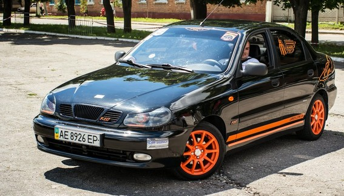
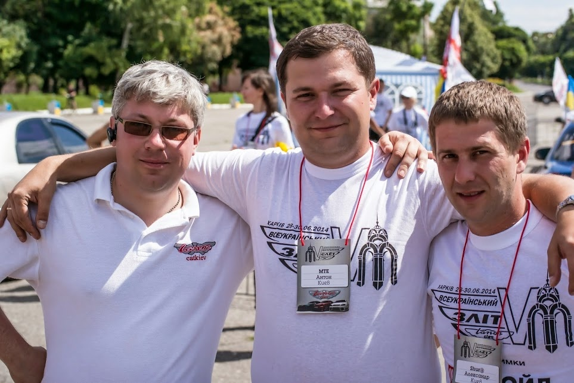
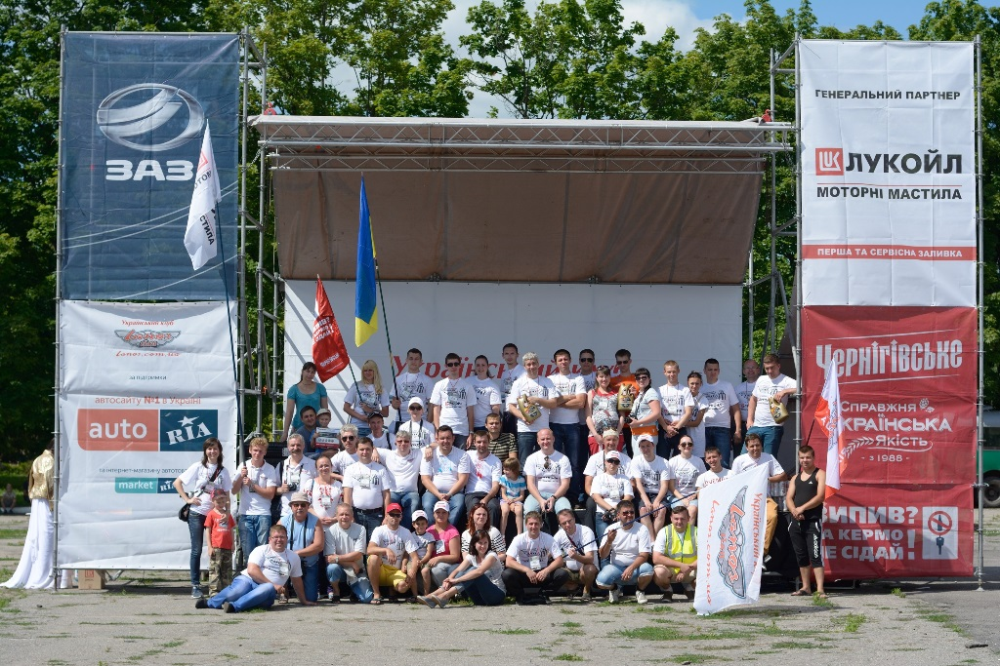
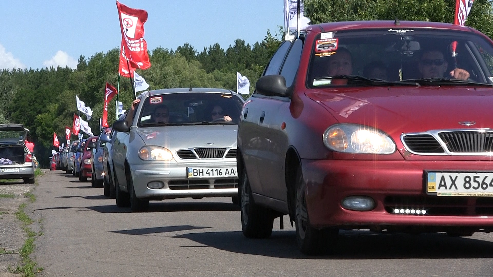

<div class="lines">
	<div id="put_parent" class="content" style="z-index: 100;">
					
		<div class="block_main">
		<h2>Автомобільний клуб «Lanos Clan» провів 5-ий щорічний зліт 7 липня 2014</h2>
					<p><strong><em>Lanos об'єднує серця! За доброю традицією автолюбителі Lanos в черговий раз зібралися разом, щоб продемонструвати свою любов до народної моделі.</em></strong></p>
									<p></p>
								<p style="text-align: justify;">Любов до автомобілів Lanos, бажання поділитися досвідом володіння цим авто, отримати нові практичні поради з автосправи та показати свою водійську майстерність – усе це котрий рік збирає людей з різних міст України. <strong>28-30 червня 2014 року</strong> за підтримки Філії «АвтоЗАЗ-сервіс» в Харківській області пройшов ювілейний <strong>5-й Всеукраїнський зліт Автомобільного клубу «Lanos Clan».</strong></p>
		<p style="text-align: justify;"><strong>Український автомобільний клуб</strong><strong>«</strong><strong>Lanos</strong><strong> </strong><strong>Clan</strong>» був створений у 2005 році групою людей, яких об'єднала любов до вітчизняного бренду <strong>ЗАЗ</strong> і до моделі <strong>Lanos.</strong> І вже 5 років поспіль «ланосоводи» з усієї України разом зі своїми улюбленими авто збираються на кілька днів, щоб провести час у хорошій компанії друзів та однодумців.</p>
		<p style="text-align: justify;"><em>&nbsp;</em><em>«На сьогоднішній день на форумі нашого клубу зареєстровано близько 60 тис. автомобілістів. </em>–<em> </em>говорить голова клубу «Lanos Clan» <strong>Тарас Котович.</strong> –<em> Нас об'єднав народний і перевірений роками вітчизняний Ланос. Це сім'я, клан і просто величезна частина життя!»</em><em></em></p>
		<p style="text-align: justify;"><br>Програма 5-го зльоту була більш ніж насиченою: <em>турнір з риболовлі</em> (для найстійкіших і з самого світанку!), <em>спортивний турнір з настільного тенісу, екскурсія пам'ятками Харківщини</em> та, звичайно ж, традиційний <em>автопробіг</em>. Офіційна частина зльоту 29 червня почалася з приголомшливого видовища – екіпажі учасників вишикувалися в колону і проїхали на місце проведення в місті <strong>Чугуїв</strong> по мальовничих місцях. На головній площі міста пройшли вже традиційні для зльотів автомобільні конкурси – <em>автослалом, автосток, автозвук, автостайлінг</em> і <em>автотюнінг</em>. А також конкурси та інші «цікавинки» для всіх учасників свята Ланос.</p>
		<p style="text-align: justify;">За словами учасників зльоту, після зльоту всі роз'їхалися по домівках із ностальгією за цим дням і трепетним очікуванням наступного року.</p>
		<p style="text-align: justify;"><em>«Ми з радістю вже котрий рік підтримуємо зльоти автолюбителів </em><em>Lanos</em><em>. </em>–<em> </em>Коментує Генеральний директор Філії «АвтоЗАЗ-сервіс» <strong>Андрій Залуцький.</strong><em> </em>–<em> Протягом років нашої співпраці клуб виріс, перетворившись на повноцінне суспільство шанувальників моделі. </em><em>Це говорить про те, що Lanos за роки експлуатації в Україні став дійсно народним авто».</em><em> </em></p>
		<p style="text-align: justify;">Сьогодні модель Lanos виробляється на потужностях Запорізького автомобілебудівного заводу. ЗАЗ <strong>&nbsp;</strong><strong>Lanos</strong> доступний у продажу у всій дилерській мережі «АвтоЗАЗ-сервіс» в кузовах <em>седан</em> і <em>хетчбек</em>, з механічною і автоматичною коробкою передач, а також у 3-х стандартах комплектацій.</p>
		
									
		
	</div>
									
</div><!-- lines_in -->
		
</div>	